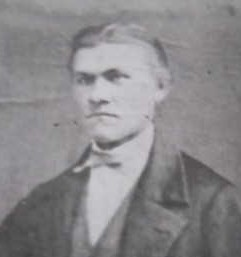
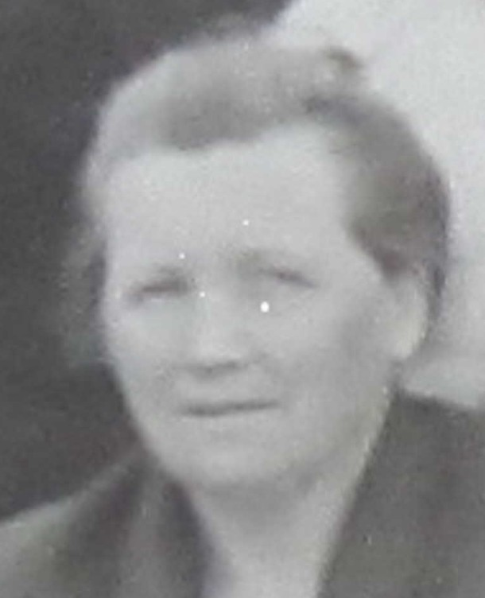

Född 1922 i Alberta, Kanada 1 .
Död 2 okt 1999 i Edmonton, Alberta, Kanada 1 .
Född 26 dec 1886 i Hafsnäset, Alanäs (Z) 2 .
Död 27 sep 1924 i Red Deer, Alberta, Kanada 3 .
Född 14 jun 1896 i Filipsdal, Gobo, Yxnerum (E) 4 .
Död 19 nov 1975 i Camrose, Alberta, Kanada 5 .

MF Karl Johan Karlsson.Född 14 dec 1868 i Nystugan, Kalerum, Gryt (E) 6 .
Död 1 aug 1955 i Smaha Road, Grindrod, British Columbia, Kanada 7 .
MFF Karl Peter Karlsson.

Född 27 feb 1837 i Käggla/Kägglö, Tryserum (E) 8 .
Död 23 feb 1904 i Hästhagen, Spolstad, Gårdeby (E) 9 .
MFM Anna Sofia Svensdotter.
Född 21 apr 1848 i Björklund, Rullerum, Ringarum (E) 10 .
Död 8 jul 1932 i Hagsätter, Halleby, Skärkind (E) 11 .

MM Elin Augusta Blomander.Född 10 dec 1877 i Drängsbo, Björsäter (E) 12 .
Död 9 aug 1958 i Enderby hospital, Enderby, British Columbia, Kanada 13 .
 Född
omkring 1946
i Storbritannien
Född
omkring 1946
i Storbritannien